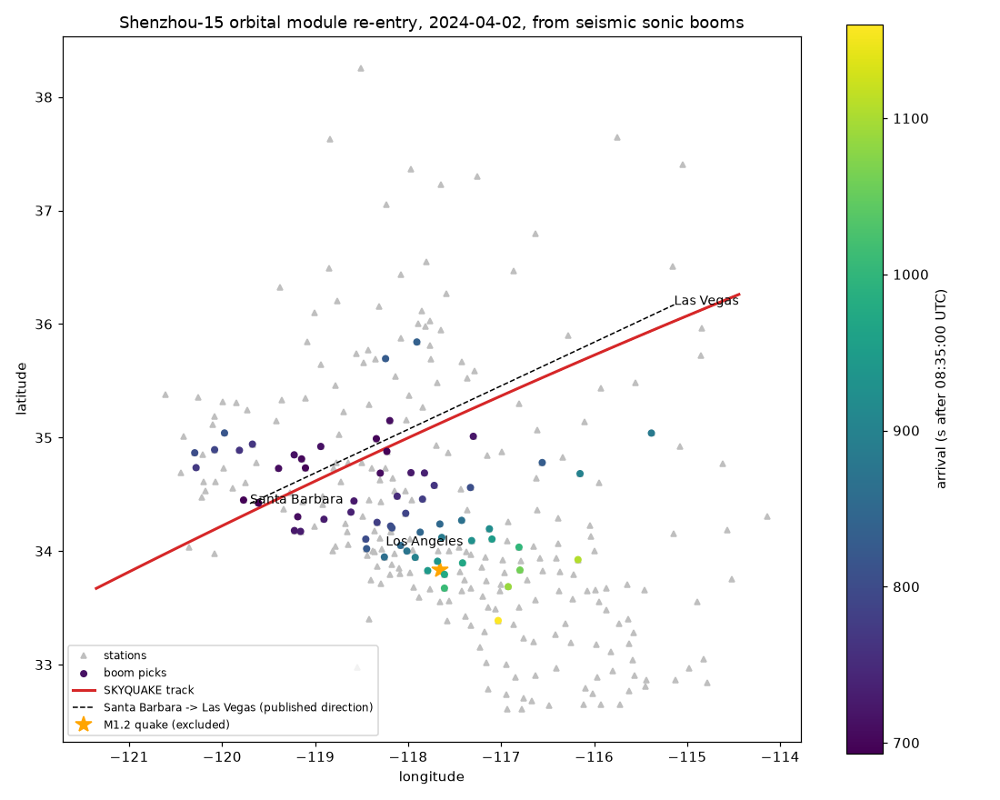
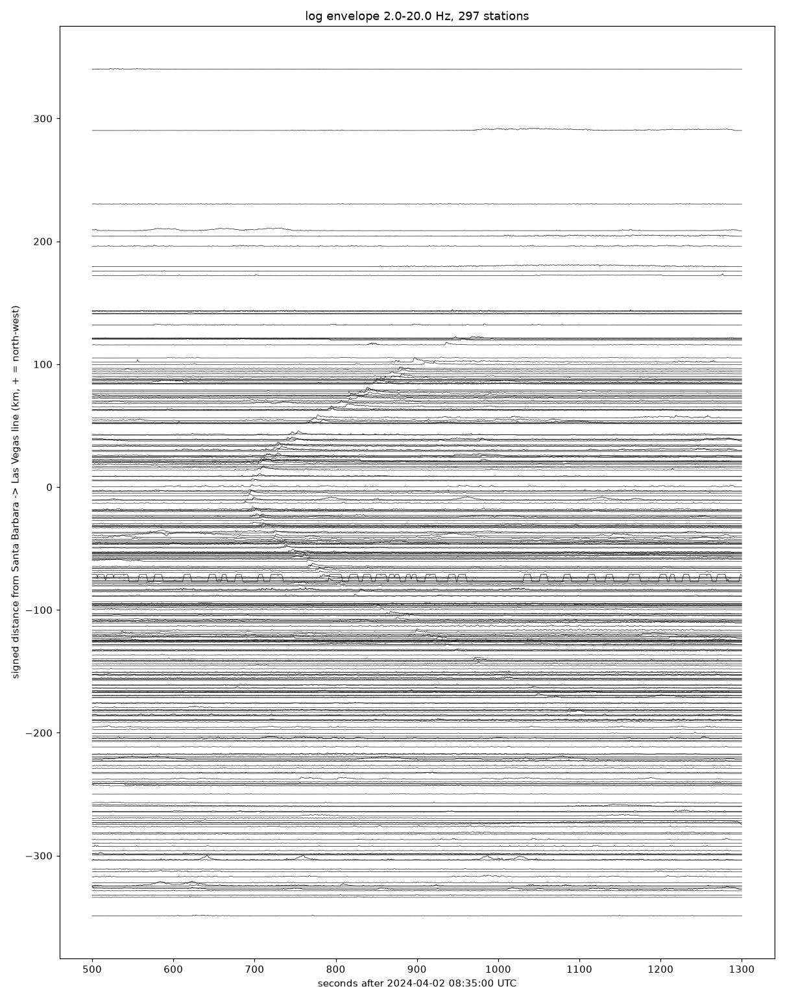

When a satellite or rocket stage re-enters the atmosphere, its sonic boom shakes the ground. Thousands of public seismometers record it, and nobody looks. SKYQUAKE turns those recordings into a trajectory, with honest error bars. Bir uydu ya da roket kademesi atmosfere geri girdiğinde, oluşturduğu ses patlaması yeri sarsar. Binlerce açık sismometre bunu kaydeder, ama bu kayıtlara kimse bakmaz. SKYQUAKE bu kayıtlardan cismin izlediği yolu dürüst hata paylarıyla çıkarır.
Several Starlink satellites re-enter daily. Rocket stages and other spacecraft fall regularly, some over populated areas.Her gün birkaç Starlink uydusu atmosfere giriyor. Roket kademeleri ve başka uzay araçları da düzenli olarak düşüyor, bazıları yerleşim yerlerinin üzerine.
Uncontrolled re-entries are often predicted only to within hours. At 7.5 km/s, that is tens of thousands of kilometres of possible ground track.Kontrolsüz düşüşlerin zamanı çoğu zaman ancak saatler mertebesinde tahmin edilebiliyor. Cisim 7,5 km/s hızla gittiği için bu, on binlerce kilometrelik olası bir rota demek.
Public seismic networks record the boom. Today, reconstructing one event takes researchers weeks. SKYQUAKE aims for one command.Açık sismik ağlar ses patlamasını zaten kaydediyor. Bugün tek bir olayı çözmek araştırmacıların haftalarını alıyor. SKYQUAKE bunu tek komuta indirmeyi hedefliyor.
Download public seismograms from FDSN archives (EarthScope, SCEDC, ORFEUS…).FDSN arşivlerinden (EarthScope, SCEDC, ORFEUS…) açık sismogramları indir.
Find the boom on each station, rejecting earthquakes, traffic and noise.Her istasyonda ses patlamasını bul. Depremleri, trafiği ve gürültüyü ele.
Fit a Mach-cone model: heading, height, speed, time and the speed of sound itself.Mach konisi modeline uydur: yön, irtifa, hız, zaman ve ses hızının kendisi.
Track and corridor as GeoJSON, with calibrated 1σ uncertainties.İz ve koridoru, kalibre edilmiş 1σ belirsizliklerle GeoJSON olarak çıkar.
The module came down uncontrolled over Southern California. We downloaded 297 public seismometers and let SKYQUAKE find the sonic boom on its own, then compared the result with the published reconstruction.Modül Güney Kaliforniya üzerinde kontrolsüz olarak düştü. 297 açık sismometrenin verisini indirdik ve ses patlamasını SKYQUAKE'in kendi başına bulmasına izin verdik. Sonra sonucu yayınlanmış analizle karşılaştırdık.

| SKYQUAKE | PublishedYayınlanan | ||
|---|---|---|---|
| TimeZaman | 08:43:51 UTC | ~08:43 UTC | ✓ |
| HeadingYön | 65.5° ± 0.2° | Santa Barbara → Las Vegas (~63–64°)Santa Barbara → Las Vegas (~63–64°) | ✓ |
| Trackİz | over Santa BarbaraSanta Barbara üzerinden | over Santa BarbaraSanta Barbara üzerinden | ✓ |
| Heightİrtifa | 56.7 ± 1.6 km | — | |
| SpeedHız | 9.9 ± 2.4 km/s | Mach 25–30 (≈ 8.0–9.6 km/s) | ~ |

And the test suite checks, over many noisy trials, that those uncertainties are neither over- nor under-confident.Test paketi, çok sayıda gürültülü denemede bu belirsizliklerin olduğundan büyük ya da küçük gösterilmediğini kontrol ediyor.
Assuming the wrong sound speed by 5 % shifts the result by about 100 km, so SKYQUAKE estimates it from the data by default.Ses hızını %5 yanlış varsaymak sonucu yaklaşık 100 km kaydırıyor. Bu yüzden SKYQUAKE ses hızını varsayılan olarak veriden tahmin ediyor.
Like the Shenzhou-15 speed above. Every real-event result goes on the validation page, good or bad.Yukarıdaki Shenzhou-15 hızında olduğu gibi. Her gerçek olay sonucu, iyi ya da kötü, doğrulama sayfasına giriyor.
Until validated on more real events, outputs are research-grade estimates. Do not use them for safety decisions.Daha fazla gerçek olayda doğrulanana kadar sonuçlar araştırma düzeyinde tahminlerdir. Güvenlik kararlarında kullanılmamalıdır.
Physics core: Mach-cone model, robust inversion, calibrated uncertainties. Layered atmosphere with ray tracing, jackknife error bars, 27 tests.Fizik çekirdeği: Mach konisi modeli, sağlam tahmin, kalibre belirsizlikler. Işın izlemeli katmanlı atmosfer, jackknife hata payları, 27 test.
First real event (Shenzhou-15, done). Better picker and pick-review tools.İlk gerçek olay (Shenzhou-15, tamamlandı). Daha iyi tespit aracı ve tespitleri gözden geçirme araçları.
Real atmosphere with winds (ERA5). Falcon 9 debris over Poland, checked against recovered fragments.Rüzgârlı gerçek atmosfer modeli (ERA5). Polonya'ya düşen Falcon 9 enkazı, bulunan parçalarla karşılaştırılacak.
More sensors: weather radar (NEXRAD), fireball flashes (GOES GLM), infrasound.Daha fazla sensör: hava radarı (NEXRAD), ateş topu parlamaları (GOES GLM), infrases.
Fully automatic: watch re-entry predictions, fetch data after each event, publish a report.Tam otomatik: atmosfere dönüş tahminlerini izle, her olaydan sonra veriyi indir, raporu yayınla.
SKYQUAKE is built in Python on ObsPy and SciPy, using only public data. The code will be released openly so anyone can check every number.SKYQUAKE, ObsPy ve SciPy kullanılarak Python'la yazılıyor ve sadece açık veri kullanıyor. Kod, herkes her sayıyı kontrol edebilsin diye açık olarak yayınlanacak.